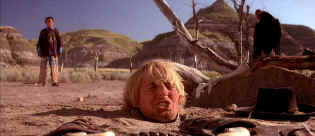

| Shanghai
Noon (SE)/B,A |
| Touchstone/2000/110/ANA
2.35 |
Get ready for a delightful Western spoof
delivered in an outstanding special edition DVD from the folks at Buena Vista. Shanghai Noon features
broad sight gags, charming characters, sweeping panoramic photography and non-stop action.
 |
| Owen Wilson keeps his head above the
sand. ©New Line |
A Chinese Imperial Guard must travel to the
American West to save a princess. Does it vaguely remind you of Red Sun in which Toshiro
Mifune plays a Japanese Imperial Guard trying to recover honor and a pair of lost samurai swords? Shanghai
Noon may not be totally original, but the execution is what counts and director Tom Dey has the
magic of Jackie Chan to count on for action and warm comedy. Chan is a comic sorcerer, a chameleon
able to change from energetic fighter to charming bumbler without even the wave of a wizard's wand.
Team Chan with an appealing buddy to play against and the comedy revs up. Owen Wilson milks Chan's
fish out of water predicament for every drop. Wilson matches Chan comedy charm for charm. The
teaming lifts Shanghai Noon a notch up the pleasure measure.
The ladies add appealing visual support for the dynamic comic duo of Chan and
Wilson. Lucy Liu brings a freckled freshness and some high kicks to Princess Pei Pei and
Brandon Merrill is statuesquely stoic as Chan's Indian bride.
Director Dey has a keen sense of pace for comedy. He sacrifices some story
clarity to keep Shanghai Noon moving like a runaway train, but it's under his complete
control. The stunts may be tame for a Chan vehicle, but they are accomplished with expected polish.
Production design is handsome and the "western" music reminiscent of many past classic
scores.
Shanghai Noon is a loaded gun of a special edition. Audio commentary from
director Dey, and stars Owen Wilson and Jackie Chan is a special treat. Chan's comments have been
added from a separate source. Dey and Wilson comment while watching the movie, but sound like they
are in different places. Deleted scenes are fun and there's even an interactive game that delivers.
A behind the scenes look at some of the stunts is a pleasure and a bonus of the evolution of the
train sequence sheds light on the moviemaking process.
Rapturous images delivered on DVD! Shanghai Noon is pure reference
quality. Colors are as bright as can be produced with rock steady stability. There's no color smear
whatsoever, despite the extraordinary saturation. Fleshtones run a full range and contrast is as
powerful as a speeding locomotive. The picture jumps off the screen. Look at those great beads of
water in the Indian attack sequence: they retain individual integrity and catch the sparkle of
sunlight. Even the finest details are resolved to perfection. Panoramic western vistas have no edge
jitter and no unsightly enhancement disturbs the remarkable images. The sound is right up there
with the picture, pounding bass tightly, swooshing tomahawks close to your ear, and creating an
overall bright and sassy ambience. |
|

Selections from the feature archive include articles on Akira Kurosawa,
Frank Darabont, Blonde Bimbos, Hollywood
Street Gangs, or Vietnam:
The Hollywood Pariah, and many more...
Robert
A. Harris

Tilting at Hollywood
He's part of the dynamic duo that restored Lawrence
of Arabia, Spartacus, My Fair Lady and Vertigo. Harris rides a white horse into the for the cause
of preserving our film legacy. Click on the image to read more.


DVDPlanet is the DVD
incarnation of legendary laser retailer Ken Crane's. Deep discounts and serious service.

The National Film Preservation Foundation (NFPF) is the nonprofit organization created by the U.S. Congress to save
America's film heritage.

Information on film sound in theaters and home theaters. Lots of helpful information provided in a
handsome interface.

A vast reservoir of DVD information, reviews, the kitchen sink. Check
out their huge DVD database including reviews from many sites.

The
Movie Poster Archive includes extensive poster images from the films of stars like Susan Hayward,
Kirk Douglas, Katharine Hepburn and many more. Our featured star is James Stewart |